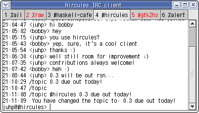

Hircules - an IRC client in haskell
Hircules (pronounced like the Greek hero) is an IRC
client written in Haskell. The code was initially
based on lambdabot
and uses gtk2hs for
the UI. It has tabs for channels and private dialogs
with highlighting. I'm planning to add more features
like completions, coloring of nicks and conversations,
better keybindings and UI, etc (see the TODO file for a longer list).
Hircules has a SourceForge project page.
Here's a screenshot of hircules-0.3 running:

News
- 2003-10-05 Hircules 0.3 released: download from the SourceForge project page
- Lots of new features and bug fixes including:
- input area at bottom of channel buffer allowing editing of multiline input
- improved charset support:
- support for utf-8
- auto-decoding of iso-2022-jp
- /coding command to set and show channel write encoding
- tab highlighting of channel activity
- when using lambdabot modules, exceptions are now caught
- one can move to a virtual channel buffer with /join now
- date-stamping in irc log
- For more details see the News and ChangeLog files.
- To build it yourself, you'll probably need a pretty current gtk2hs from cvs. (An recent snapshot rpm (built for gtk2-2.2 and glibc-2.3) is available from my haskell rpms)
- 2003-07-03 Hircules 0.2 available for download from the SourceForge project page
- Lots of bug fixes including:
- Whitespace in messages is now preserved.
- CTCP actions are now displayed properly.
- MODE changes should now be displayed properly.
- Quit and nick-change messages now only appear now in the relevant channels.
- many other minor fixes.
New features include:
- The "/me" command has been added for writing ctcp actions.
- All channels are now logged to a log file.
- Private messages and public messages addressed to one (ie with "nick: ...")
cause an audible beep, and public messages addressed to one also appear in a new virtual Alert channel.
- 2003-05-16 Hircules is now hosted on SourceForge.Net.
- Hircules now has a project page on SourceForge.Net.
- A CVS repository and a mailing-list have been setup.
- 2003-05-15 Hircules 0.1 released (first release)
Features:
- tabs for channels and private dialogs
- raw irc tab
- all channel tab
- lambdabot extension modules can be used, though most of them are disabled by default currently
Building
To build Hircules you need:
- ghc, the Glasgow Haskell Compiler (ghc-6.0.1 recommended)
- gtk2hs, a GTK 2 Binding for Haskell (you probably need cvs HEAD).
- Optionally lambdabot

Jens Petersen
Last modified: Sun Oct 5 21:01:31 JST 2003